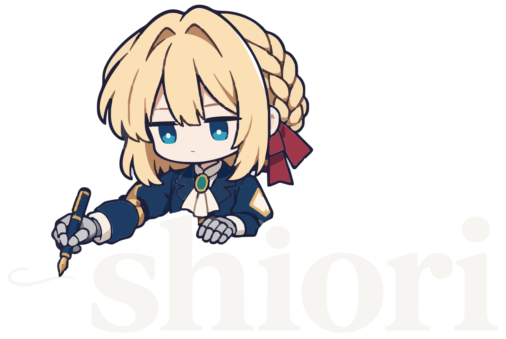
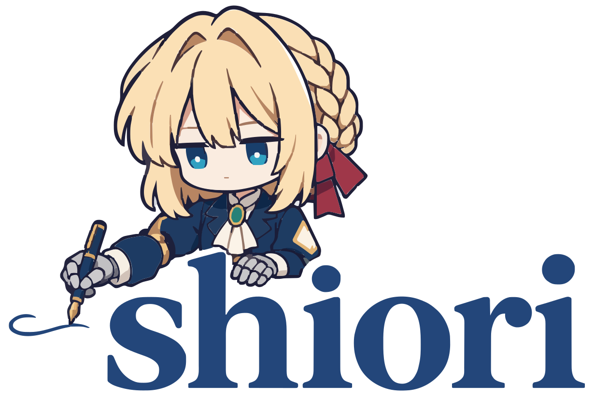

Shiori · Violetto’s signature
Return to Shiori →
Every word, a little closer.

Blue ink, a fountain pen, and Violetto’s quiet attention.
The evening signature · the same forms, in soft white.
A letter, in her own hand.
The approved writing pose pairs a reserved Violetto with substantial lowercase serif lettering. Her navy coat, blonde braid, red ribbon and mechanical hands remain part of the signature.
These files contain real vector paths traced from the approved concept, with small face details restored. No embedded bitmap or installed font is required. The app icon uses the same face.
One mark, from app icon to stationery.
All artwork is vector. The wordmark uses outlined letters, so it stays consistent without installing fonts.